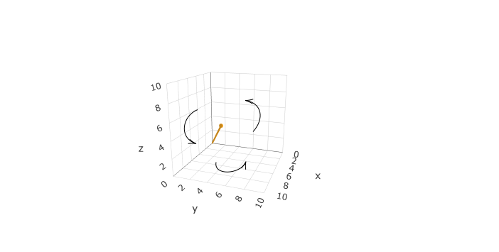
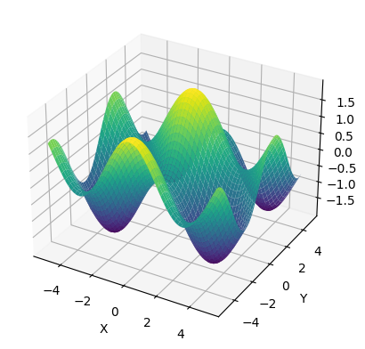
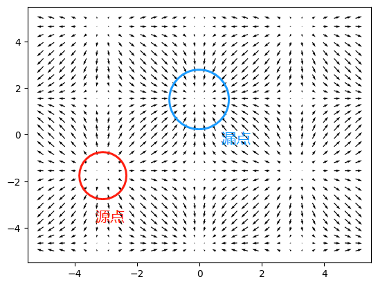

摘于：【Nabla 算子】与梯度、散度、旋度-BiliBili
∇：读作nabla，是希腊语中的一种竖琴。也被称作atled 因为它是Δ(delta) 倒过来的形状。也有被称作Del，因此∇ 算子也被称作Del 算子
向量的积
在高中时，我们大概学过向量可以表示为v^={x,y,z}，也可以表示为v^=xi^+yj^+zk^，在三维坐标系中可以表示为：

其中：
- i^,j^,k^ 分别是xyz 轴上的基底
- 内积/点乘：
- 不同方向的基点乘为0，同向为1：i^j^=0,i^i^=1
- v1^⋅v2^=(x1i^+y1j^+z1k^)⋅(x2i^+y2j^+z2k^)=x1x2+y1y2+z1z2=∣v1∣∣v2∣cos(θ)
- 可以将矢量计算得到标量，比如：力做功
- 外积/叉乘：
- 不同方向的积叉乘为1，方向延右手定则，右手抓去，大拇指的指向：
- i^i^=0
- i^j^=k^
- j^k^=i^
- k^i^=j^
- v1^⋅v2^=(x1i^+y1j^+z1k^)×(x2i^+y2j^+z2k^)
- =x1y2i^j^+x1z2i^k^+y1x2j^i^+y1z2j^k^+z1x2k^i^+z1y2k^j^
- =(x1y2−y1x2)k^+(z1x2−x1z2)j^+(y1z2−z1y2)i^
数量值函数与向量值函数
一个函数的自变量可以是n 多个，对应着一个n 维空间的向量，其值域可以是一个数值，也可以是一个线性空间或线性空间的子集：
- f:Rn→R：数量值函数（数量场）
- f:Rn→Rm：向量值函数（向量场）
数量值函数
f(x,y)=x2+y2
向量值函数
f(x,y)=[xy][i^,j^]
∇ 算子
算子可以将函数转化为另一个函数，而∇ 算子可以实现数量值函数与向量值函数的互相转化、以及向量值函数间的互相转化，其定义式如下：
∇==[∂x1∂,∂x2∂,…,∂xn∂]T⎣⎢⎢⎢⎢⎡∂x1∂∂x2∂⋮∂xn∂⎦⎥⎥⎥⎥⎤
在Sympy 中，有一个vector 模块，可以向量的计算。我们首先定义示例函数：f(x,y)=cos(x)+sin(y)
import numpy as np
import sympy as sp
from sympy.vector import CoordSys3D, Del
from sympy.utilities.lambdify import lambdify
import matplotlib.pyplot as plt
C = CoordSys3D('C')
f = sp.cos(C.x) + sp.sin(C.y)
fZ = lambdify((C.x, C.y), f, "numpy")
x_vals = np.linspace(-5, 5, 100)
y_vals = np.linspace(-5, 5, 100)
X, Y = np.meshgrid(x_vals, y_vals)
Z = fZ(X, Y)
fig = plt.figure()
ax = fig.add_subplot(projection='3d')
ax.plot_surface(X, Y, Z, cmap='viridis')
ax.set_xlabel('X')
ax.set_ylabel('Y')
ax.set_zlabel('Z')
plt.show()

梯度——数量值函数到向量值函数
通过数量乘法，∇ 算子可以将数量值函数转化为向量值函数，表示函数值在各个自变量方向上变化的速度，也被称为梯度（Gradient）：
∇f=⎣⎢⎢⎢⎢⎡∂x1∂∂x2∂⋮∂xn∂⎦⎥⎥⎥⎥⎤f
通过运行以下代码观察结果：
delop = Del()
grad = delop.gradient(f)
gradX = grad.dot(C.i).simplify()
fX = lambdify((C.x, C.y), gradX, "numpy")
gradY = grad.dot(C.j).simplify()
fY = lambdify((C.x, C.y), gradY, "numpy")
dX = fX(X, Y)
dY = fY(X,Y)
plt.quiver(X,Y,dX,dY)
plt.show()
因为上面的代码坐标点过于密集，可以手工稀疏之后，显示结果如下：

散度——向量值函数到数量值函数
通过内积（点乘），∇ 算子可以将同维度的向量值函数转化为数量值函数，表示函数值在某个点上的发散程度，也被称为散（saˋn）度（Divergence）：
∇⋅f==⎣⎢⎢⎢⎢⎡∂x1∂∂x2∂⋮∂xn∂⎦⎥⎥⎥⎥⎤⋅⎣⎢⎢⎢⎢⎡f1f2⋮fn⎦⎥⎥⎥⎥⎤∂x1∂f1+∂x2∂f2+⋯+∂xn∂fn
可以理解为一个点上流入与流出的量的差。散度是通量的体密度。
上面的例子中，我们已经有了向量场grad，可以对于这个向量场求散度：
diver = delop.dot(grad)
diverz = diver.simplify()
fZ = lambdify((C.x, C.y), diverz, "numpy")
Z = fZ(X, Y)
plt.pcolormesh(X, Y, Z, cmap='jet')
plt.title('Sin Function')
plt.xlabel('x')
plt.ylabel('y')
plt.colorbar()
plt.show()

从上面的图像中可以看到，温度越高的地方，对应函数梯度是向外发散的，证明此处函数是凹进去的。
电场的散度
此例牵扯到球坐标与直角坐标间的转换问题，具体可参考：电场的高斯定律证明
假设有点电荷在原点处，有电场强度f(x)=∣∣x∣∣2x，可得：
∇⋅f=0,(x=0)
所以除原点外，电场的散度处处为0
拉普拉斯算子
∇2⋅f=∇⋅∇⋅f 表示求一个函数的梯度的散度，这里的f 的梯度在物理上一般可以是场强或者其他表示势（驱动力）的物理量，例如电场强度E。如果在某一处的值为正，则表示该处存在着一个源，为负则表示此处存在着漏。
旋度——向量值函数到向量值函数
通过向量积（叉乘），∇ 算子可以将同维度的向量值函数转化为另一个向量值函数，表示函数值在某个点上的旋转程度，也被称为旋度（Curl）：
∇×f===⎣⎢⎢⎢⎢⎡∂x1∂∂x2∂⋮∂xn∂⎦⎥⎥⎥⎥⎤×⎣⎢⎢⎢⎢⎡f1f2⋮fn⎦⎥⎥⎥⎥⎤∣∣∣∣∣∣∣i∂x∂f1j∂y∂f2k∂z∂f3∣∣∣∣∣∣∣⎣⎢⎢⎡∂y∂f3−∂z∂f2∂z∂f1−∂x∂f3∂x∂f2−∂y∂f1⎦⎥⎥⎤
可以理解为一个点附近的流速差。旋度是环量的面密度。需要注意的是旋度一般不超过三维空降。
对于上面梯度的旋度，可以通过代码计算：
curl = delop.cross(grad)
curlZ = curl.dot(C.k).simplify()
fZ = lambdify((C.x, C.y), curlZ, "numpy")
Z = fZ(X, Y)
print(Z)
结果发现其旋度处处为0。
麦克斯韦方程组
有了以上的基础，可以理解著名的麦克斯韦方程组（电势的梯度是场强–场强的散度和旋度）：
| 名称 |
微分形式 |
积分形式 |
说明 |
| 高斯定律 |
∇⋅E=ε0ρ |
∬SE⋅ds=ε0Q |
闭合曲面电通量与其中包含的电荷量成正比（电场为有源场，散度为ε0ρ） |
| 高斯磁定律 |
∇⋅B=0 |
∬SB⋅ds=0 |
闭合曲面磁通量恒为0（磁场为无源场，散度为0） |
| 法拉第电磁感应定律 |
∇×E=−∂t∂B |
∮LE⋅dℓ=−dtdΦB |
闭合环路中的电场强度的旋度（环路积分等于感应电动势）与磁通密度随时间的变化率成反比 |
| 麦克斯韦-安培（环路）定律 |
∇×B=μ0J+μ0ε0∂t∂E |
∮LB⋅dℓ=μ0I+μ0ε0dtdΦE |
前半部分是安培环路定律，适合常规电路；后半部分ε0∂t∂E表示位移电流，交变的电场会产生磁场储存能量。可以解释电容为什么能够导通交流电的现象。 |
另外
关于角动量守恒，以前只想到角动量的值守恒，但是为什么陀螺仪可以保持方向恒定，昨天才忽然想到角动量是矢量，角动量守恒就包括数值的守恒和方向的守恒。
L=r×p
📅 2022-08-10 Aachen
📅 2025-07-13 Tokyo, Update: Maxwell’s Equations, Conservation of Angular Momentum